Manual técnico
Descripción climatológica, matemática y estadística del pipeline de cópulas, para quien necesite entenderlo, validarlo o continuarlo. Describe lo que hace el código de la rama principal, paso por paso. Para configurar y correr una corrida sin entrar en el detalle, ver la guía de uso.
1. Qué hace el pipeline
Un evento extremo (una ola de calor, un período frío, una sequía) tiene varias características a la vez: cuánto dura, qué tan intenso es, cuánta magnitud acumula. Un análisis univariado pregunta, por ejemplo, «¿cada cuántos años se espera una ola de al menos 7 días?» o «¿cada cuántos años una con intensidad mayor que 3?». Pero lo que importa es la combinación: una ola larga y a la vez intensa es mucho más rara que cada cosa por separado, y cuánto más rara depende de cuánto se relacionan duración e intensidad.
El pipeline responde esa pregunta para cada estación y cada par de variables con cuatro pasos:
- Ajusta a cada variable su distribución marginal (qué valores toma y con qué frecuencia).
- Verifica que los datos se puedan modelar así: que la serie de eventos sea estacionaria y que las dos variables sean dependientes.
- Modela la dependencia con una cópula y elige la familia que mejor ajusta.
- Combina cópula y marginales en una distribución conjunta y calcula el período de retorno de cada combinación de valores.
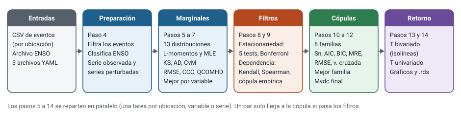
01_copulas.R las ejecuta en 14 pasos numerados.| Paso | Qué hace | Sección |
|---|---|---|
| 4 | Lee y filtra eventos, asigna la fase ENSO, genera las series perturbadas | 2 |
| 5, 6 | Ajusta 13 distribuciones por variable y elige la mejor | 3 |
| 7 | Aplica la mejor distribución a las series perturbadas | 2.3 |
| 8 | Estacionariedad de cada serie (5 tests) | 4 |
| 9 | Dependencia de cada par (3 tests) | 5 |
| 10 | Ajusta 6 familias de cópulas a los pares que pasan los filtros | 6 |
| 11 | Elige la mejor familia por ubicación y par | 7 |
| 12 | Arma el objeto final: cópula + marginales | 7 |
| 13, 14 | Período de retorno combinado y univariado, con gráficos | 8 |
Alcance. La identificación de los eventos a partir de las series diarias no forma parte de este repositorio. El pipeline recibe una tabla de eventos ya identificados (ver 2.1). Tampoco genera las series sintéticas del generador estocástico: si el archivo las trae, las usa como realizaciones.
2. Datos de entrada
2.1 Eventos y variables
La unidad de análisis es el evento: una fila con su fecha de inicio, su fecha de fin y sus métricas. Para cada ubicación y tipo de evento, la serie de eventos ordenada por fecha de inicio es la serie que se modela (no la serie diaria). Las variables disponibles son:
| Variable | Significado | Naturaleza |
|---|---|---|
duracion | Cantidad de pasos temporales (días en olas y períodos; pentadas en sequías) | Entera, con muchos empates |
intensidad | Intensidad media del evento: magnitud dividida por la duración | Continua |
magnitud | Intensidad acumulada durante el evento. Vale \(M = D \cdot I\) (duración por intensidad) | Continua |
minimo, maximo | Valor mínimo (o máximo) alcanzado por el evento | Continua |
Todas se toman en valor absoluto (abs()), de modo que olas de frío y de calor, o sequías, tengan la misma orientación y la dependencia esperada sea positiva. Esto importa más adelante: las familias de cópulas implementadas solo modelan dependencia positiva.
En la aplicación a temperaturas extremas de Argentina (corrida Olas_20) hay seis tipos de evento, y cada uno es una corrida independiente:
| Tipo | Identificador | Estaciones |
|---|---|---|
| Ola de calor (TX y TN) | OlaCalorTXyTN | 69 |
| Ola de frío (TX y TN) | OlaFrioTXyTN | 59 |
| Período cálido de TN | PeriodoCalidoTN | 72 |
| Período cálido de TX | PeriodoCalidoTX | 72 |
| Período frío de TN | PeriodoFrioTN | 72 |
| Período frío de TX | PeriodoFrioTX | 72 |
TX es la temperatura máxima diaria y TN la mínima. Se usan eventos de duración mínima de 3 días. La estación 87420 se excluye del análisis de resultados, de modo que quedan 416 pares estación × tipo.
Qué filtra el pipeline al leer los eventos
conf_id: la configuración elegida enconfiguraciones.eventos(una sola por corrida).realizacion ≤ n.realizaciones: realizaciones del generador a usar. Los datos observados corresponden a una sola.tipo_eventoigual aeventos.tipoyduracion ≥ eventos.duracion_minima.
2.2 Clasificación ENSO
A cada evento se le asigna la fase de El Niño–Oscilación del Sur vigente en el mes de inicio. La fuente es el índice RONI (Relative Oceanic Niño Index) en trimestres móviles solapados (DJF, JFM, …, NDJ). Cada trimestre trae su clasificación (Niño o Niña con intensidad débil, moderada, fuerte o muy fuerte, o neutro).
Como los trimestres se solapan, un mismo mes calendario pertenece a hasta tres trimestres. La regla para resolver el mes (función ClasificarGrupoEnso) es:
- Si entre los trimestres del mes hay al menos un Niño y ningún Niña, el mes es Niño con la primera categoría en orden cronológico.
- Si hay al menos una Niña y ningún Niño, es Niña, con el mismo criterio.
- En cualquier otro caso (solo neutros, o mezcla de Niño y Niña) el mes es Neutro.
Los trimestres DJF y NDJ cruzan el límite de año y se corrigen con un desplazamiento de año. Los eventos fuera del rango del archivo quedan sin clasificar (NA). La fase ENSO no interviene en el ajuste: se usa para colorear los eventos observados en los gráficos de período de retorno (ver la sección 12 para desactivarlo) y en los análisis posteriores.
2.3 Series observada y series perturbadas
Para cada ubicación y variable el pipeline trabaja con tres series: la observada (n_serie = 0) y n.series.perturbadas series perturbadas (2 por defecto). Una serie perturbada es la observada con un ruido uniforme pequeño sumado a cada valor:
donde \(v\) es el valor mínimo de detección de la variable (valores_minimos: 1 para la duración y 0,1 para las demás), es decir, la unidad mínima de medida. El ruido tiene dos propósitos:
- Romper empates. Las cópulas trabajan sobre rangos, y una duración entera con muchos valores repetidos produce rangos empatados. Los tests y los ajustes asumen variables continuas.
- Propagar la incertidumbre de la discretización. Se repite el ajuste en varias versiones de los datos, y el parámetro final de la cópula es la mediana entre ellas (sección 7).
La semilla (s.series.perturbadas, 123 por defecto) se guarda junto con los resultados para poder regenerar las mismas series.
Hasta la corrida Olas_20 el ruido se calculaba como \(v \cdot U(0, v)\) (rango \([0, v^2]\)), y era diez veces menor que el pretendido para las variables con \(v = 0{,}1\). Se corrigió (ver la sección 10); para la duración (\(v = 1\)) no cambia nada.
Dos usos distintos del ruido. Las distribuciones marginales se ajustan sobre la serie observada a la que se le agrega un jitter simétrico mínimo (solo a duracion y minimo, con la función jitter() de R, cuya amplitud es proporcional al menor salto entre valores distintos; para la duración entera es de ±0,4 días). Ese ruido tiene su propia semilla (s.series.perturbadas + 1), de modo que no depende de cuántas series perturbadas se generen, y no se agrega antes de generarlas. Las series perturbadas se ajustan también (paso 7) con la mejor distribución de cada variable, pero esos parámetros no intervienen en la cópula final, que usa las marginales de la serie observada.
3. Distribuciones marginales
Una cópula describe solo la dependencia entre variables. Para obtener probabilidades de valores concretos hay que combinarla con la distribución de cada variable por separado. Cada variable, en cada ubicación, se ajusta con las mismas candidatas y se queda con la mejor (pasos 5 y 6).
3.1 Candidatas y estimación
Hay 13 distribuciones habilitadas por defecto (columna uso_sequias de parametros_copulas.yml); el archivo define 26 en total y se habilitan editando esa columna.
| Código | Distribución | Código | Distribución |
|---|---|---|---|
exl | Exponencial | ln3 | Log-normal de 3 parámetros |
gam | Gamma | nor | Normal |
gev | Valores extremos generalizada | pe3 | Pearson tipo III |
glo | Logística generalizada | st3 | t de Student con 3 grados de libertad |
gno | Normal generalizada | wei | Weibull |
gpa | Pareto generalizada | lap | Laplace |
gum | Gumbel |
Cada una se estima con dos métodos, de modo que hay hasta 26 ajustes candidatos por variable:
- L-momentos (Hosking, 1990), con el paquete
lmomco: los parámetros se obtienen igualando los L-momentos muestrales (calculados sin sesgo) con los teóricos. Es robusto ante valores atípicos y bien comportado con muestras chicas. - Máxima verosimilitud, con
fitdistrplus, usando como valor inicial el ajuste por L-momentos.
Si la variable tiene menos de min_cantidad_valores_ajuste_univariado valores (30 por defecto; la corrida de olas usó 20), no se ajusta ninguna distribución y los pares que la incluyen quedan sin cópula.
3.2 Bondad de ajuste univariada
Cada ajuste candidato se evalúa con dos clases de medidas.
Tests de hipótesis (filtran)
Los tres comparan la muestra con la distribución ajustada, con \(H_0\): «los datos provienen de esta distribución».
- Kolmogorov–Smirnov (KS): \(D_n = \sup_x |F_n(x) - F(x)|\), la mayor distancia entre la distribución empírica y la ajustada.
- Anderson–Darling (AD): \(A^2 = -n - \frac{1}{n}\sum_{i}(2i-1)\left[\ln F(x_{(i)}) + \ln\left(1 - F(x_{(n+1-i)})\right)\right]\). Pesa más las colas.
- Cramér–von Mises (CvM): \(W^2 = \frac{1}{12n} + \sum_i \left[F(x_{(i)}) - \frac{2i-1}{2n}\right]^2\), una distancia cuadrática integrada.
El ajuste pasa si ninguno de los tres rechaza con \(\alpha = 0{,}05\) (\(p \ge\) umbral; un \(p\) faltante cuenta como rechazo). Los tres suponen una variable continua. Para variables discretas, como la duración en días enteros, rechazan sistemáticamente aunque el ajuste sea razonable, por eso las variables listadas en variables_sin_test_continuidad (en la aplicación a temperaturas, duracion) se saltean estos tests y el ajuste pasa automáticamente.
Medidas de cuantiles (ordenan)
- RMSE/IQR: raíz del error cuadrático medio entre los cuantiles empíricos y los de la distribución ajustada (en las probabilidades 0,01; 0,11; …; 0,91), dividida por el rango intercuartílico de la muestra para hacerla adimensional. Menor es mejor.
- CCC (coeficiente de correlación de concordancia de Lin, 1989) entre cuantiles empíricos y ajustados en las probabilidades 0,01; 0,02; …; 0,99: \(\rho_c = \dfrac{2\,\mathrm{cov}(a,b)}{\sigma_a^2 + \sigma_b^2 + (\mu_a - \mu_b)^2}\). Vale 1 si los cuantiles coinciden. Mayor es mejor.
- QCOMHD (Wilcox et al., 2014): compara los cuantiles de la muestra con los de una muestra simulada del mismo tamaño desde la distribución ajustada, con el estimador de Harrell–Davis y bootstrap (501 réplicas), con corrección por comparaciones múltiples. El índice resumen es la fracción de los cuantiles superiores (\(\ge 0{,}5\)) donde no hay diferencia significativa.
3.3 Selección de la mejor distribución
Entre los ajustes que pasan los tests se elige el de menor RMSE/IQR. Solo si hubiera exactamente el mismo valor se desempata por mayor CCC y luego por el índice QCOMHD. En la práctica el criterio efectivo es el RMSE/IQR. Si ningún ajuste pasa los tests, la variable queda sin distribución (NA).
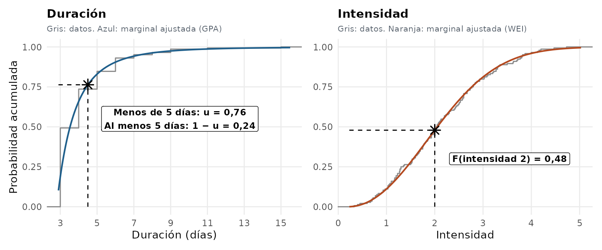
4. Estacionariedad
El período de retorno \(T = N / (n P)\) supone que los eventos se comportan igual a lo largo de todo el registro: misma distribución, sin tendencia y sin memoria. Si esto no se cumple, el período de retorno de una combinación cambia con el tiempo y el valor calculado no representa a ninguna época. El pipeline verifica estas condiciones sobre cada serie de eventos con cinco tests. En todos la hipótesis nula \(H_0\) es la propiedad deseable, y la serie pasa el test si no se rechaza.
| Test | Función | \(H_0\) | Detecta |
|---|---|---|---|
| Box–Ljung (3 rezagos) | stats::Box.test | Sin autocorrelación hasta el rezago 3 | Memoria lineal: \(Q = n(n+2)\sum_{k=1}^{3}\hat\rho_k^2/(n-k) \sim \chi^2_3\) |
| Punto de cambio univariado | npcp::cpDist, método secuencial | La distribución es la misma en toda la serie | Un quiebre en nivel o en forma de la distribución |
| Punto de cambio de la autocópula | npcp::cpAutocop, rezago 1 | La dependencia entre eventos consecutivos no cambia | Un cambio en la dependencia serial |
| Mann–Kendall | Kendall::MannKendall | Sin tendencia monótona | Aumento o disminución sostenidos |
| Independencia serial empírica | copula::serialIndepTest, hasta 10 rezagos | Los eventos son serialmente independientes | Dependencia serial de cualquier forma (no solo lineal) |
Los de punto de cambio son test secuenciales (Bücher, Kojadinovic y colaboradores) con bootstrap multiplicador; el empírico usa 100 simulaciones de la distribución nula del estadístico.
Umbral con corrección de Bonferroni
Una serie es estacionaria solo si pasa los cinco. Con un umbral \(\alpha\) en cada test, la probabilidad de rechazar por azar una serie que sí es estacionaria sube a \(1-(1-\alpha)^5\), que con \(\alpha = 0{,}05\) es del 22,6 %. La corrección de Bonferroni usa \(\alpha/5 = 0{,}01\) en cada test, y deja el error global en alrededor del 4,9 %. Es el valor por defecto (correccion.estacionariedad: bonferroni; con ninguna se usa \(\alpha\) en cada test). Como los tests no son independientes, la corrección es conservadora (rechaza menos de lo nominal).
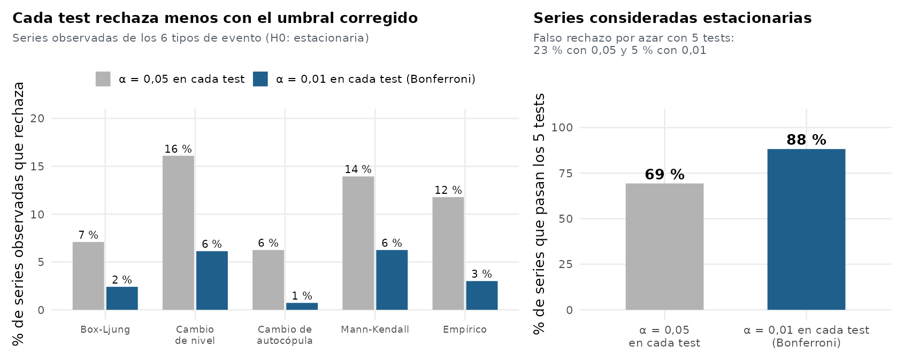
Cómo se evalúa y se consolida
- Los tests se aplican en secuencia y el primero que rechaza corta la evaluación: los siguientes no se calculan. Por eso el resultado guardado no contiene siempre los cinco p-valores.
- Un test que da error o devuelve p-valor faltante cuenta como rechazo.
- Se evalúa cada serie (ubicación, variable, serie observada o perturbada, realización). Si hay varias realizaciones, la serie es estacionaria si lo es la mayoría (
ConsolidarEstacionariedad: promedio \(\ge 0{,}5\); un empate favorece a la estacionariedad). - Un par de variables es estacionario si lo son las dos series.
5. Dependencia
Si dos variables son independientes, su cópula es el producto \(C(u,v) = uv\), y ajustar una familia de cópulas es innecesario o engañoso. Antes de ajustar se comprueba que haya dependencia con tres tests, aplicados en secuencia sobre cada par (\(H_0\): independencia). El par pasa si cada test rechaza con \(p \le 0{,}05\).
| Test | Mide | Detecta |
|---|---|---|
Kendall (cor.test) | \(\tau = \dfrac{\#\text{concordantes} - \#\text{discordantes}}{\binom{n}{2}}\) | Dependencia monótona (de rangos) |
Spearman (cor.test) | Correlación de los rangos | Dependencia monótona |
Cópula empírica (copula::indepTest) | Distancia entre la cópula empírica \(C_n\) y el producto \(uv\) (Genest y Rémillard, 2004) | Dependencia de cualquier forma. Distribución nula por Monte Carlo con 1000 simulaciones |
Los dos primeros son casi equivalentes, y el tercero es el más general. En este caso no hay corrección por tests múltiples: se usa \(\alpha = 0{,}05\) en cada uno. La distribución del estadístico del tercer test se simula con una semilla fija (20261022) para que dos corridas den el mismo resultado.
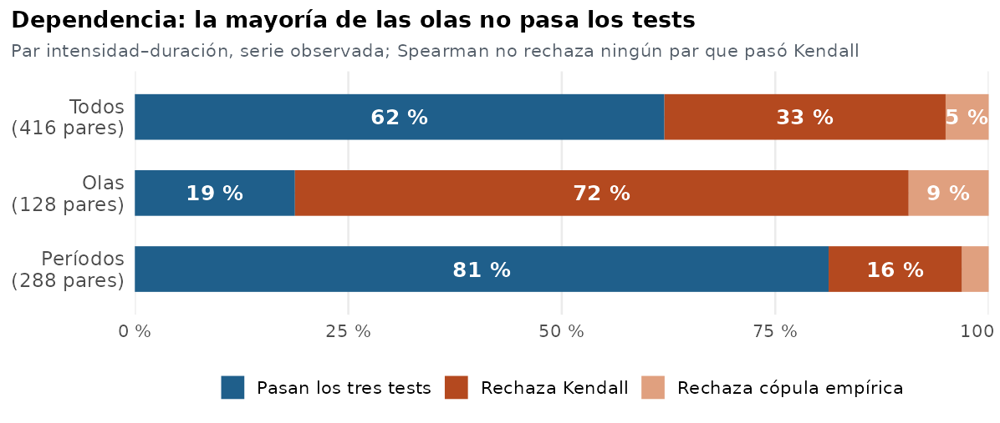
Solo dependencia positiva. Los tests de dependencia son bilaterales, y un par con dependencia negativa los pasa. Sin embargo, todas las familias implementadas exigen \(\tau > 0\) (stopifnot(tau > 0) al ajustar), de modo que un par con dependencia significativa pero negativa termina sin cópula. Con las variables de este pipeline (duración, intensidad, magnitud), todas en valor absoluto, es lo esperado.
6. Cópulas
6.1 Teorema de Sklar
Para un vector aleatorio \((X, Y)\) con marginales continuas \(F_X, F_Y\), existe una única función \(C\), la cópula, tal que
$$ H(x, y) = P(X \le x,\, Y \le y) = C\big(F_X(x),\, F_Y(y)\big). $$La cópula es la distribución conjunta de las variables ya transformadas a uniformes \((U, V) = (F_X(X), F_Y(Y))\). Separa lo que cada variable hace por sí sola (las marginales) de cómo se relacionan (la cópula). Eso permite elegir la mejor marginal de cada variable sin que condicione la forma de la dependencia, y reconstruir después la distribución conjunta.
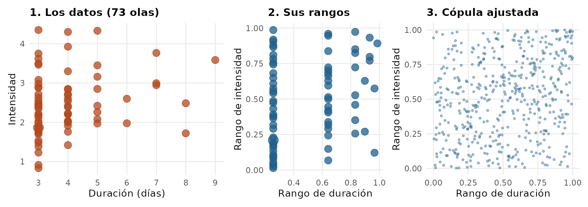
La unicidad exige marginales continuas. Con la duración en días enteros no se cumple estrictamente, y de ahí vienen las series perturbadas (2.3) y la corrección de continuidad (8.2).
6.2 Familias implementadas
Se ajustan seis familias. Cuatro son arquimedianas (definidas por un generador \(\varphi\), con \(C(u,v) = \varphi^{-1}(\varphi(u)+\varphi(v))\)) y dos son elípticas. La diferencia que más importa en la práctica es la dependencia de cola: la probabilidad de que una variable sea extrema dado que la otra lo es,
$$ \lambda_U = \lim_{q\to 1^-} P(V > q \mid U > q), \qquad \lambda_L = \lim_{q\to 0^+} P(V \le q \mid U \le q). $$| Familia | \(C(u,v)\) | Parámetro | \(\tau\) | Cola |
|---|---|---|---|---|
| Gumbel | \(\exp\!\left\{-\left[(-\ln u)^\theta + (-\ln v)^\theta\right]^{1/\theta}\right\}\) | \(\theta \ge 1\) | \(1 - 1/\theta\) | Superior: \(\lambda_U = 2 - 2^{1/\theta}\) |
| Joe | \(1 - \left[(1-u)^\theta + (1-v)^\theta - (1-u)^\theta(1-v)^\theta\right]^{1/\theta}\) | \(\theta \ge 1\) | Creciente en \(\theta\) | Superior: \(\lambda_U = 2 - 2^{1/\theta}\) |
| Clayton | \(\left(u^{-\theta} + v^{-\theta} - 1\right)^{-1/\theta}\) | \(\theta > 0\) | \(\theta/(\theta+2)\) | Inferior: \(\lambda_L = 2^{-1/\theta}\) |
| Frank | \(-\dfrac{1}{\theta}\ln\!\left[1 + \dfrac{(e^{-\theta u}-1)(e^{-\theta v}-1)}{e^{-\theta}-1}\right]\) | \(\theta \ne 0\) | \(1 - \frac{4}{\theta}\left[1 - D_1(\theta)\right]\) | Ninguna |
| Normal | \(\Phi_\rho\!\left(\Phi^{-1}(u), \Phi^{-1}(v)\right)\) | \(\rho \in (-1, 1)\) | \(\frac{2}{\pi}\arcsin\rho\) | Ninguna |
| t de Student | \(t_{\rho,\nu}\!\left(t_\nu^{-1}(u), t_\nu^{-1}(v)\right)\) | \(\rho\); \(\nu = 4\) fijo | \(\frac{2}{\pi}\arcsin\rho\) | Ambas: \(\lambda_U = \lambda_L = 2\,t_{\nu+1}\!\left(-\sqrt{\tfrac{(\nu+1)(1-\rho)}{1+\rho}}\right)\) |
(\(D_1\) es la función de Debye de orden 1.) Hay una séptima, Ali–Mikhail–Haq (AjustarCopulaAMH), implementada pero no incluida en la tabla de configuración: solo cubre dependencias débiles (\(\tau \le 1/3\)).
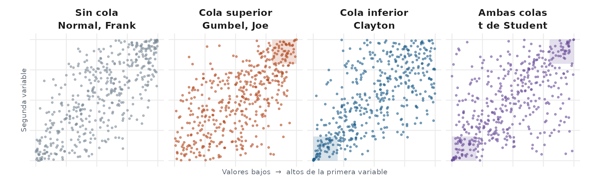
6.3 Estimación del parámetro
- Pseudo-observaciones. Los datos (en valor absoluto) se pasan a rangos normalizados \(u_i = R_i/(n+1)\) (
copula::pobs), con empates resueltos al azar (ties.method = "random"). Así no hace falta conocer las marginales para ajustar la cópula (método semiparamétrico). - Valor inicial. Inversión de la relación entre \(\tau\) de Kendall y el parámetro (
initOpt, métodotau.mean). - Máxima pseudo-verosimilitud (
copula::fitCopula): se maximiza \(\ell(\theta) = \sum_{i=1}^n \ln c_\theta(u_i, v_i)\), donde \(c_\theta\) es la densidad de la cópula. Para Gumbel el parámetro se acota en \(\theta \ge 1{,}0001\). Para la t, los grados de libertad se fijan en 4 y solo se estima \(\rho\). - Validación. Salvo en la t, el estimador debe quedar dentro de su intervalo de confianza (
confint); si no, el ajuste se considera fallido.
Si algo falla en un ajuste puntual (\(\tau \le 0\), no convergencia, parámetro fuera de rango), el error se atrapa, se informa como advertencia y ese ajuste queda sin resultado. No aborta la corrida.
7. Bondad de ajuste y selección de la cópula
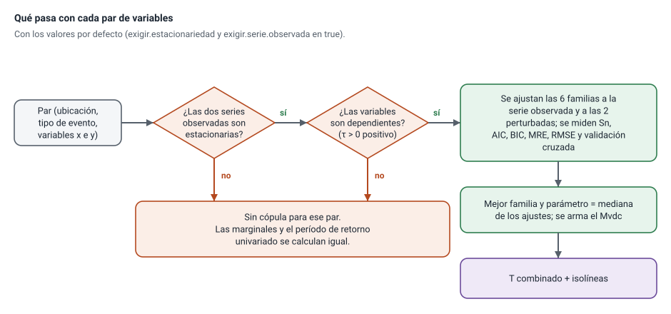
Cuándo se ajusta
Para cada ubicación y par se ajustan las seis familias a tres series (la observada y las dos perturbadas), siempre que se cumpla:
- Las variables son dependientes en esa serie.
- Las dos series son estacionarias (se puede relajar con
exigir.estacionariedad: false). - La serie observada del par ya pasó ambas condiciones (
exigir.serie.observada: true). Las perturbadas solo dan robustez al ajuste: no habilitan una cópula que la serie real no justifica. Confalsealcanza con que pase alguna perturbada, que era el criterio original.
Medidas de bondad de ajuste
| Medida | Definición | Se usa para |
|---|---|---|
| Sn (Genest, Rémillard y Beaudoin, 2009) | Distancia de Cramér–von Mises entre la cópula empírica y la ajustada: \(S_n = \sum_{i=1}^n\left[C_n(u_i, v_i) - C_{\hat\theta}(u_i, v_i)\right]^2\). Su p-valor sale de un bootstrap paramétrico con 1000 réplicas, re-estimando la cópula en cada una (pseudo-verosimilitud, optimizador BFGS). \(H_0\): la familia es correcta. | Test de hipótesis y primer criterio de orden |
| AIC | \(-2\ell + 2k\), con \(k\) parámetros. Premia el ajuste y penaliza la complejidad. Menor es mejor. | Orden |
| BIC | \(-2\ell + k \ln n\), con \(n\) la cantidad de eventos | Desempate |
| MRE y RMSE | Se simulan 1000 puntos de la cópula ajustada, y se compara su cópula empírica con la teórica evaluadas en puntos al azar: error relativo medio (%) y raíz del error cuadrático medio (%). | Desempate |
| Validación cruzada | Criterio de verosimilitud por validación cruzada de copula::xvCopula. Menor es mejor. | Desempate |
Con la configuración de la aplicación a temperaturas (variables_sin_test_continuidad: ["duracion"]) el test Sn se omite en todo par que incluya la duración, porque el optimizador falla con variables casi discretas (non-finite finite-difference value; ver la guía de uso). La selección queda entonces determinada por AIC.
Elección de la familia ganadora
Para cada ubicación y par, las seis familias se ordenan comparando la mediana, entre las series (observada y perturbadas), de cada medida. El orden de prioridad es: mayor p-valor de Sn; luego menor AIC; luego menor BIC; luego MRE, RMSE y validación cruzada. Con Sn omitido, la primera comparación es un empate para todas las familias y decide el AIC.
Parámetro final y distribución conjunta
Con la familia ganadora, el parámetro final es la mediana de los parámetros estimados en cada serie en que el ajuste fue posible (la observada y las perturbadas). Se arma entonces un objeto copula::mvdc: la cópula con ese parámetro, más las dos marginales ganadoras de la sección 3. Ese objeto es la distribución conjunta de \((X, Y)\) y es lo que usa el período de retorno.
Los resultados quedan en data/output/copulas_<id>.rds (resultado final por ubicación y par), mejores_ajustes_multivariados_<id>.rds y ajustes_multivariados_<id>.rds (todas las familias y series).
8. Período de retorno
8.1 Período de retorno combinado
El período de retorno es el tiempo medio entre eventos que superan un umbral. Si los eventos ocurren a una tasa \(\lambda = n/N\) (eventos por año) y cada uno supera el umbral con probabilidad \(P\), los eventos que lo superan ocurren a tasa \(\lambda P\), y
$$ T = \frac{1}{\lambda P} = \frac{N}{n\,P}. $$Para el caso conjunto (co-occurrence, o «y»), \(P\) es la probabilidad de que un evento supere a la vez \(x\) en la primera variable e \(y\) en la segunda. Con las marginales \(F_X, F_Y\) y la cópula \(C\):
$$ P(X \ge x,\, Y \ge y) = 1 - F_X(x) - F_Y(y) + C\big(F_X(x),\, F_Y(y)\big), $$ $$ T(x,y) = \frac{N}{n\,\big[1 - F_X(x) - F_Y(y) + C(F_X(x), F_Y(y))\big]}. $$Es el análogo de la Figura 7 de Chen et al. (2024; ver referencias). El pipeline evalúa \(T\) en una grilla de 100 × 100 puntos (resolucion_grilla) que va del mínimo observado hasta el máximo más un 40 % del rango (margen_grilla), y dibuja las isolíneas de 2, 5, 10, 20, 50, 100, 200 y 500 años sobre los eventos observados.
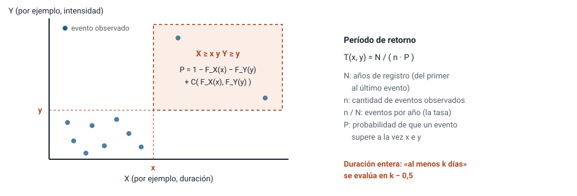
\(N\) y \(n\). \(n\) es la cantidad de eventos observados de la ubicación, y \(N\) la extensión del registro en años, calculada como la diferencia entre la fecha de inicio del primer y del último evento dividida por 365,25. Por lo tanto \(N\) depende de los datos de eventos, no de la longitud del registro diario. La probabilidad conjunta se acota inferiormente en \(10^{-6}\) para evitar valores infinitos por redondeo.
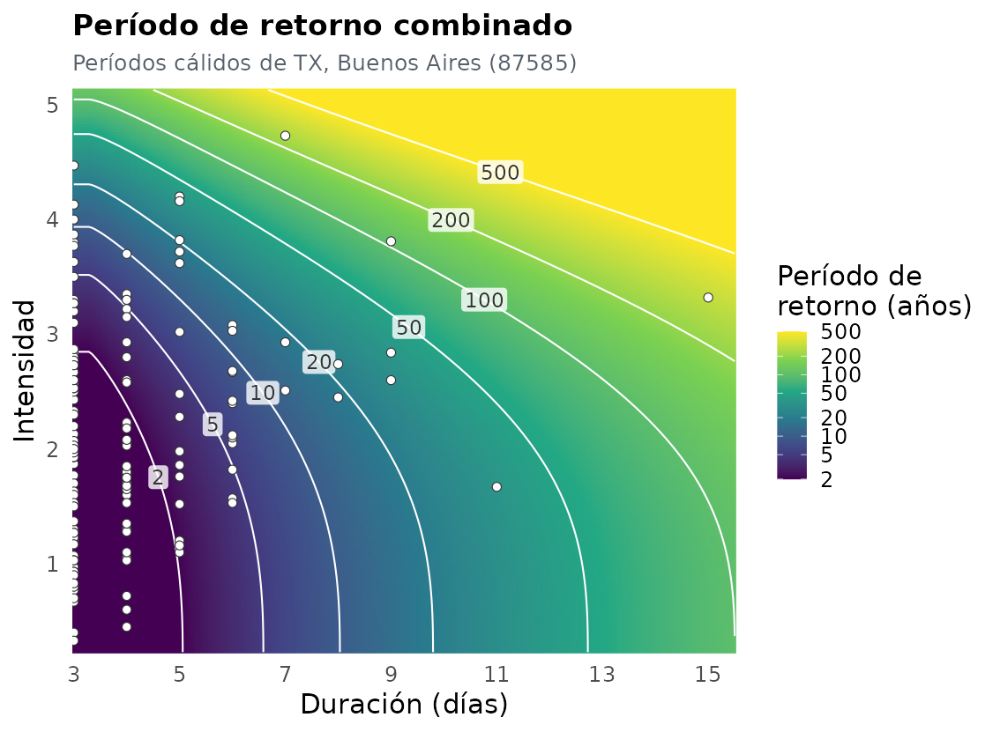
8.2 Corrección de continuidad para la duración
La duración es entera, pero las distribuciones y cópulas son continuas. Para el modelo, un evento de \(k\) días ocupa el intervalo \((k-0{,}5,\, k+0{,}5]\). La frase «duración de al menos \(k\) días» equivale entonces a «duración \(> k - 0{,}5\)», así que se evalúa la marginal en \(k - 0{,}5\). Sin la corrección se evaluaría en \(k\), la probabilidad conjunta incluiría a los eventos de exactamente \(k\) días con peso incompleto y la probabilidad quedaría sobrestimada entre 25 y 30 % (el período de retorno subestimado). Se controla con periodo_retorno.correccion_continuidad_duracion (true por defecto). El eje de los gráficos sigue en días enteros; el 0,5 es solo parte del cálculo.
Ejemplo: en 87585 con duración ≥ 5 se evalúa en 4,5; \(F_X(4{,}5) = 0{,}763\), de modo que la probabilidad de «5 días o más» es 0,237 en el modelo, frente a 0,264 en los datos (38 de 144).
8.3 Período de retorno univariado
Para una sola variable, \(T(x) = \dfrac{N}{n\,[1 - F(x)]}\). El gráfico superpone los eventos observados en posición de graficación de Weibull: para el evento de rango \(m\) (1 = el mayor), \(T_{\mathrm{emp}} = \dfrac{N (n+1)}{n\, m}\). Si la distribución ajustada es adecuada, la curva sigue a los puntos. Opcionalmente (graficar_distribucion_ajuste) se genera un histograma con la densidad ganadora.
8.4 Período de retorno vía duración–magnitud
Las estaciones sin cópula intensidad–duración pueden tener cópula duración–magnitud (ver el balance). Como \(M = D \cdot I\) exactamente, \(P(D > d,\, I > i) = P(D > d,\, M > i\,D)\). La función ProbabilidadConjuntaViaMagnitud lo calcula por simulación: genera 400 000 pares \((u, v)\) de la cópula, los lleva a \((D, M)\) con las marginales, forma \(I = M/D\), y cuenta la fracción de pares que cumple la condición. Se fija una semilla (20261023) para que el resultado se repita.
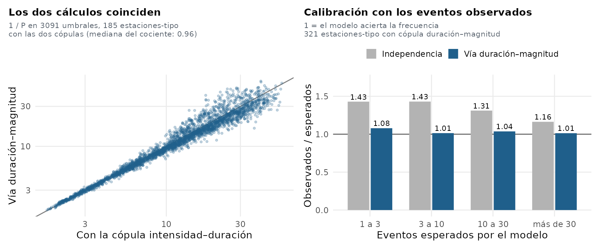
9. Qué pasó en la aplicación a temperaturas
Corrida Olas_20: 6 tipos de evento, 73 estaciones menos exclusiones, par intensidad–duración, con los valores por defecto de los filtros (Bonferroni, serie observada, estacionariedad exigida).
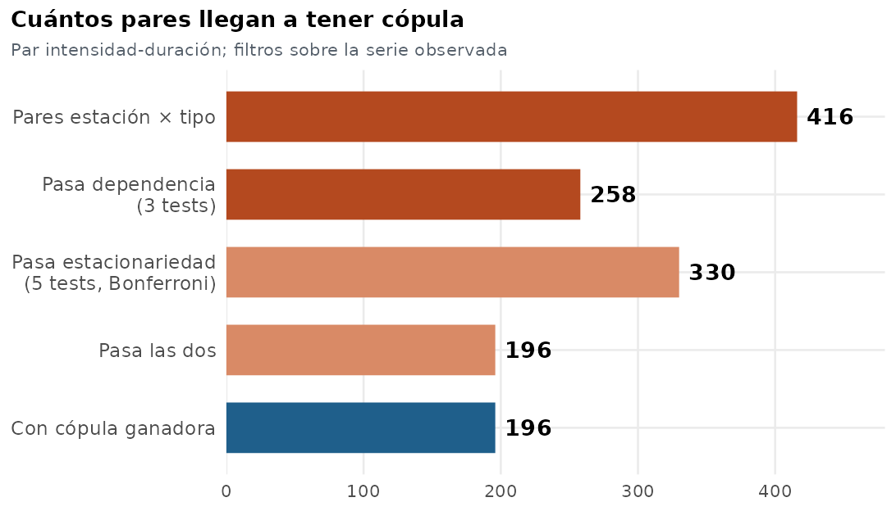
| Resultado | Olas | Períodos |
|---|---|---|
| Pares estación × tipo | 128 | 288 |
| Pasan dependencia (3 tests) | 24 (19 %) | 234 (81 %) |
| Pasan estacionariedad | 112 | 218 |
| Pasan las dos (con cópula ganadora) | 22 | 174 |
Las olas pasan poco el filtro de dependencia: Kendall rechaza el 72 % de los pares de olas (92 de 128) frente al 16 % de los períodos (45 de 288). Una causa probable es el tamaño de la muestra: las olas tienen pocas decenas de eventos por estación, y con tan pocos datos los tests tienen poca potencia para detectar una dependencia moderada.
La cola de la cópula ganadora cambia con el tamaño de la muestra: el 27 % de los ajustes de períodos (mediana de 144 eventos por estación) tienen cola, y el 50 % en las olas.
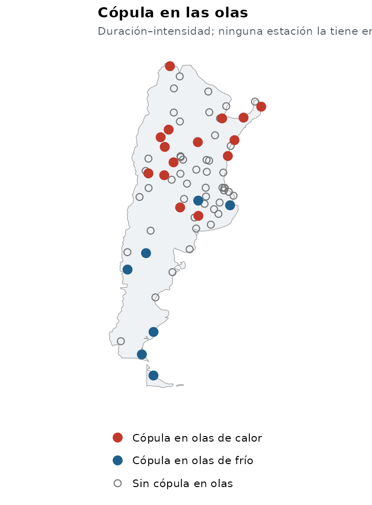
La vía duración–magnitud aporta cópulas en estaciones donde el par intensidad–duración no pasó los filtros: para las olas de calor suma 43 estaciones (de 15 a 58 de 69) y para las de frío 40 (de 7 a 47 de 59).
10. Limitaciones y correcciones
Esta sección reúne los supuestos del método, que son propios de la metodología, y los detalles de implementación que se encontraron y corrigieron al revisar el código.
Supuestos del método
- Tasa de eventos constante. \(T = N/(nP)\) supone \(\lambda = n/N\) constante. Si la frecuencia de eventos tiene tendencia (por ejemplo, en La Quiaca, olas de calor: 25 en 65 años, Mann–Kendall sobre los conteos anuales con \(p < 0{,}001\)), la tasa promedio subestima la actual y \(T\) queda sobreestimado. Los tests de estacionariedad evalúan los valores de los eventos, no su frecuencia anual. Hay un tratamiento alternativo documentado, aplicado solo en la presentación y no incluido en el pipeline:
docs/pendiente_tasa_eventos_tendencia.md. - Muestra chica y cola. Con pocos eventos la selección de la familia es poco discriminante, y las colas se estiman de manera muy incierta. Los ajustes con menos de 30 eventos deben leerse con cautela.
- Eventos independientes entre sí. El período de retorno trata a los eventos como un proceso de ocurrencias independientes. La prueba de independencia serial detecta dependencia entre eventos consecutivos, pero no la modela.
- Bondad de ajuste con parámetros estimados. Los p-valores de KS, AD y CvM de la sección 3 se calculan como si los parámetros fueran conocidos, pero se estiman con los mismos datos. Eso hace que los tests rechacen menos de lo nominal.
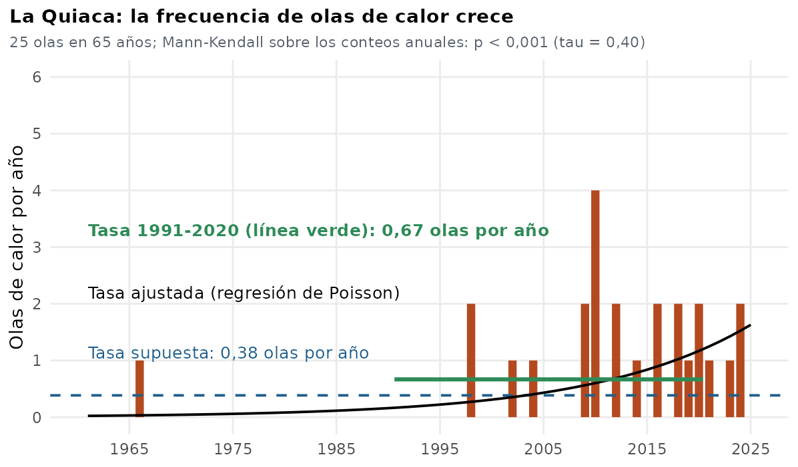
Correcciones de implementación (octubre de 2026)
Al revisar el código para escribir este manual se encontraron seis detalles de implementación. Se corrigieron, cada uno en su propio cambio y con un test automático.
| # | Dónde | Qué había | Qué se hizo | Efecto sobre los resultados |
|---|---|---|---|---|
| 1 | TestBIC |
Penalizaba con log(ncol(matriz.eventos)) = \(\ln 2\) (cantidad de variables) en lugar de \(\ln n\). |
Ahora usa log(nrow(...)), la cantidad de eventos. |
Cambia el valor reportado del BIC. No cambia la familia elegida mientras decida el AIC, porque el BIC solo desempata. |
| 2 | AgregarRuido |
El ruido era v * runif(n, 0, v), de rango \([0, v^2]\): con \(v = 0{,}1\) era diez veces menor que el valor mínimo de detección. |
Ahora es runif(n, 0, v), como dice el comentario de la función. |
La duración (\(v = 1\)) no cambia. En intensidad, magnitud y mínimo las series perturbadas tienen más ruido (hasta 0,1). La serie observada no cambia, así que el filtro principal tampoco. Cambia levemente el parámetro final de la cópula (mediana entre series) y los tests sobre las perturbadas. |
| 3 | DeterminarMejorCopula |
Los desempates comparaban el BIC con mejor.copula$ccc, un campo que no existe. |
Compara con mejor.copula$bic. |
Ninguno: la función no la usa el pipeline (el paso 11 usa MejorAjusteMultivariadoUC). |
| 4 | Procesos paralelos | Los pasos con simulación (tests de estacionariedad, bondad de ajuste de marginales y de cópulas) no fijaban semilla: el resultado dependía del proceso y del orden de las tareas. | Nueva función FijarSemillaTarea: cada tarea fija una semilla derivada de s.series.perturbadas y de su clave (ubicación, variable, serie, familia). Se aplica en los pasos 5, 8 y 10. |
Dos corridas con los mismos datos y parámetros dan los mismos resultados. Los valores concretos de los tests simulados cambian respecto de corridas anteriores. |
| 5 | Paso 4 de 01_copulas.R |
El jitter de la serie del ajuste univariado dependía de cuántas series perturbadas se generaban antes. | Semilla propia, s.series.perturbadas + 1, justo antes del jitter. |
El jitter ya no cambia al variar n.series.perturbadas. |
| 6 | Familia t | Los grados de libertad (4) están fijos al ajustar y se reconstruyen en el objeto final con el valor por defecto del paquete. Coinciden, pero de manera implícita. | Se documenta (sección 6.2). No se modificó. | Ninguno. |
Corridas anteriores. Los resultados de la corrida Olas_20 y las cifras de la presentación se calcularon antes de las correcciones 2 y 4 y por eso no se pueden reproducir exactamente con el código actual. Las conclusiones cualitativas no dependen de estos detalles (la serie observada, que decide los filtros, no cambia), pero para citar números hay que volver a correr o aclarar con qué versión se calcularon. Con reusar.resultados: true se reutilizan los ajustes guardados, así que las correcciones solo se ven al recalcular.
11. Reproducibilidad
- Semilla de la corrida.
s.series.perturbadas(123 por defecto) fija las series perturbadas y, a partir de ella, la semilla de cada tarea paralela (FijarSemillaTarea: semilla de la corrida combinada con la ubicación, variable, serie y familia). Como la semilla depende de la tarea y no del proceso, el resultado no cambia conmax.procesosni con el orden en que se reparten las tareas. - El jitter de la serie del ajuste univariado usa
s.series.perturbadas + 1. - El test de cópula empírica usa la semilla 20261022 y restaura el estado del generador al terminar.
- El período de retorno vía duración–magnitud usa la semilla 20261023, con restauración del estado.
- La semilla de la corrida se guarda en
partial/semilla_utilizada_<id>.rds. Los eventos completos (observados y perturbados) quedan enpartial/eventos_completos_<id>.rds, y los demás intermedios endata/partial/. reusar.resultados: truerecarga los ajustes de una corrida anterior y los reevalúa con los filtros vigentes, para no repetir el trabajo cuando solo cambian los filtros. Es válido únicamente si los filtros nuevos son al menos tan estrictos como los de la corrida anterior, y solo si esa corrida se hizo con la misma versión del código (ver las correcciones).- Hay pruebas automáticas (
tests/testthat) de los criterios de estacionariedad y dependencia, los filtros de ajuste, la corrección de continuidad, el período de retorno vía magnitud, el BIC, el ruido, el desempate de familias y las semillas por tarea. - Para las figuras de la presentación, el script
scripts/presentacion/estacionariedad_todos_tests.Rcalcula los cinco p-valores de estacionariedad en todas las series con las mismas funciones y semillas que el pipeline. Hace falta porque el pipeline corta al primer test que rechaza y no guarda los demás.
12. Parámetros que afectan los resultados
Todos están en parametros_copulas.yml (la guía de uso explica cuáles tocar en una corrida común).
| Parámetro | Por defecto | Efecto sobre el método |
|---|---|---|
umbral.p.valor | 0,05 | Nivel \(\alpha\) de todos los tests (los de estacionariedad lo dividen por 5 con Bonferroni) |
correccion.estacionariedad | bonferroni | Umbral por test: \(\alpha/5\) o \(\alpha\) |
exigir.estacionariedad | true | Exige series estacionarias para ajustar cópulas |
exigir.serie.observada | true | La serie observada debe pasar los filtros |
n.series.perturbadas | 2 | Cantidad de series con ruido |
s.series.perturbadas | 123 | Semilla de las series perturbadas |
valores_minimos | 1 (duración), 0,1 (resto) | Escala del ruido de las series perturbadas |
min_cantidad_valores_ajuste_univariado | 30 | Mínimo de eventos para ajustar una marginal (20 en la aplicación de temperaturas) |
variables_sin_test_continuidad | vacío | Variables discretas que se saltean KS/AD/CvM y Sn (["duracion"] en la aplicación de temperaturas) |
tests.estacionariedad, tests.dependencia | 5 y 3 tests | Qué tests se aplican (y en qué orden) |
configuracion.ajuste.univariado, configuracion.ajuste.copula | 13 y 6 | Distribuciones y familias candidatas (uso_sequias) |
periodo_retorno.niveles_anios | 2 … 500 | Isolíneas dibujadas |
periodo_retorno.resolucion_grilla, margen_grilla | 100, 0,4 | Grilla de evaluación del período de retorno |
periodo_retorno.correccion_continuidad_duracion | true | Evalúa «al menos \(k\)» en \(k - 0{,}5\) |
periodo_retorno.colorear_enso | true | Colorea los eventos por fase ENSO |
reusar.resultados | false | Reutiliza ajustes de una corrida anterior |
13. Referencias
- Sklar, A. (1959). Fonctions de répartition à n dimensions et leurs marges. Publ. Inst. Statist. Univ. Paris, 8, 229–231.
- Genest, C., Rémillard, B. y Beaudoin, D. (2009). Goodness-of-fit tests for copulas: A review and a power study. Insurance: Mathematics and Economics, 44(2), 199–213.
- Genest, C. y Rémillard, B. (2004). Test of independence and randomness based on the empirical copula process. Test, 13(2), 335–369.
- Genest, C. y Favre, A.-C. (2007). Everything you always wanted to know about copula modeling but were afraid to ask. Journal of Hydrologic Engineering, 12(4), 347–368.
- Hosking, J. R. M. (1990). L-moments: analysis and estimation of distributions using linear combinations of order statistics. J. R. Statist. Soc. B, 52(1), 105–124.
- Hofert, M., Kojadinovic, I., Mächler, M. y Yan, J. (2018). Elements of Copula Modeling with R. Springer.
- Bücher, A. y Kojadinovic, I. (2016). Dependent multiplier bootstraps for non-degenerate U-statistics under mixing conditions with applications. J. Stat. Plan. Inference, 170, 83–105 (base del paquete
npcp). - Wilcox, R. R., Erceg-Hurn, D. M., Clark, F. y Carlson, M. (2014). Comparing two independent groups via the lower and upper quantiles. Journal of Statistical Computation and Simulation, 84(7), 1543–1551.
- Lin, L. I.-K. (1989). A concordance correlation coefficient to evaluate reproducibility. Biometrics, 45(1), 255–268.
- Mann, H. B. (1945). Nonparametric tests against trend. Econometrica, 13(3), 245–259. Kendall, M. G. (1975). Rank Correlation Methods. Griffin.
- Ljung, G. M. y Box, G. E. P. (1978). On a measure of lack of fit in time series models. Biometrika, 65(2), 297–303.
- Kojadinovic, I. (2017). npcp: An R package for nonparametric tests for change-point detection in possibly multivariate observations. Journal of Statistical Software, 77(3), 1–31.
- Chen, S., Zhao, J., Dou, H., Yang, Z., Li, F., Byun, J. y Kim, S. W. (2024). A study on the monitoring of heatwaves and bivariate frequency analysis based on mortality risk assessment in Wuhan, China. Frontiers in Public Health, 12, 1409563. doi:10.3389/fpubh.2024.1409563. Es la referencia del código para el período de retorno combinado (Figura 7) y el histograma de la distribución ajustada (Figura 5).
Repositorio: CRC-SAS/copulas. Las cifras de la sección 9 provienen de la corrida Olas_20.